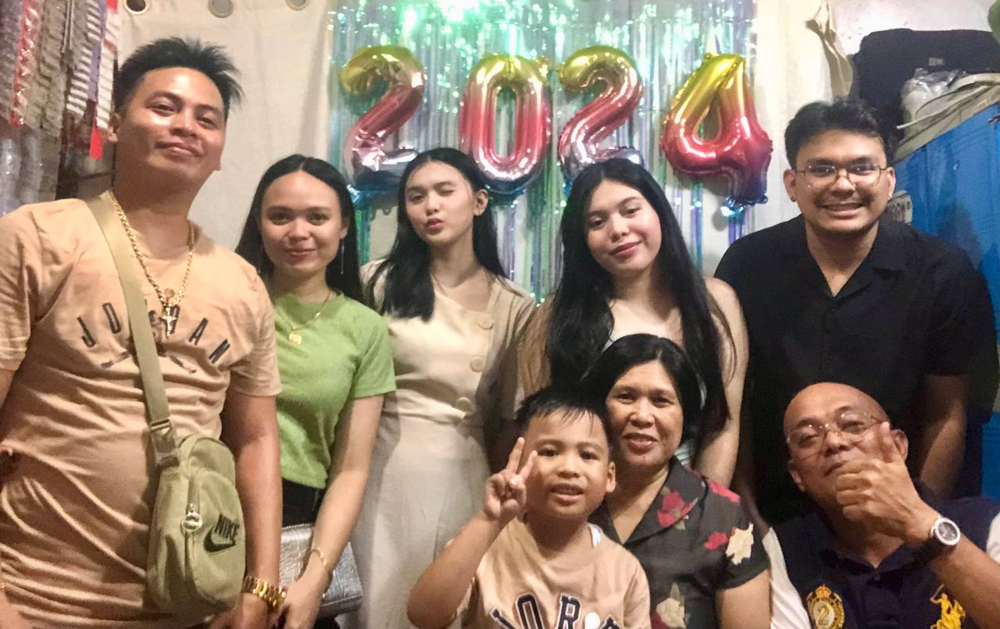

I'm Riley Grace M. Avelino, from BTVTED-EST-1A at the Technological University of the Philippines.
We are 6 in the family, i have 2 sisters and 1 brother. My older sister has her own family, and I'm currently living with them.
My brother just graduated from college, and currently working now as a barista at a cafe.
And lastly, my younger sister is currently a grade 11 student at Arellano University.
My mother is the one who's taking care of us and our home, while my father is working as a family driver.
We live in Vitas, Tondo, Manila. I was born and raised here so I've never been in the countryside.

My hobby is listening to or jamming music. I like R&B/Soul, and I like make-up by Ariana Grande.
I listen to music when i have time and allow myself to like when i am on my way to school or to go home.
Or when i'm doing something like cleaning up, doing my homework or doing school activities.
When i'm on a break or have a whole month free, i spend my time watching movies and series.
My favorite quote from Mahatma Gandhi is "Be the change you wish to see in this world."
This means that if we want to see improvements or positive changes in the world, we should start by changing ourselves first.
By changing our actions and behaviors. Instead of waiting for others to make things better,
let's remember that our actions can inspire others to follow.
I still haven't figured out what's my dream. I'm still unsure and i know i will find it out sooner or later.
While i'm here in the university i'm trying to explore who i am and what i want to do.
For now, I'm focusing on building my skills like communication and teamwork, which will help me in the future.